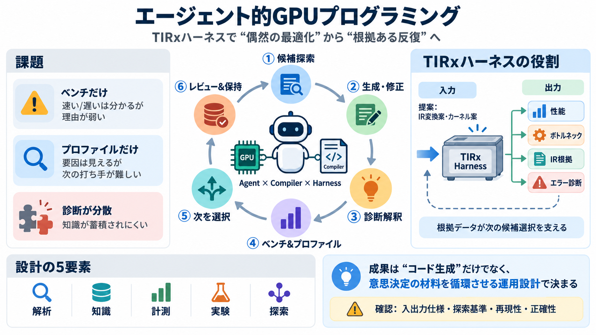

Agentic GPU Programming for MLSys — Agentic GPU Programming for MLSys
Part II, TIRx Harness Overview. This part introduces TIRx, one concrete instance of a compiler harness and the environme…

GPU最適化を「意思決定できる反復プロセス」に変えるために、コンパイラ解析・ベンチ・プロファイル・知識を“ハーネス”として統合します。
GPUカーネル最適化は“速くなったか”だけでは前に進めません。原因（ボトルネック）と、次の打ち手の根拠が必要です。
TIRxハーネスは、コンパイラIRを扱って検査・操作・解析し、エージェントが根拠あるデータで意思決定できる“試験台”です。
エージェント的GPU最適化は、コンパイラ解析・知識ベース・ベンチ/プロファイル・ワークフロー調整を一体で回します。
エージェントは「候補探索→生成/修正→診断解釈→ベンチ/プロファイル→次の選択→保持」を反復して改善します。
ハーネスが返すのは“速さ”だけでなく、解析・診断・性能データのセットです。これにより、探索の再現性と効率が上がります。
ベンチは比較の窓、プロファイルは理解の窓です。両者を分けることで、改善案の方向修正がしやすくなります。
最適化の成果は、個々の要素よりも、それらをどう組み合わせるか（ワークフロー合成）で決まります。
概略では、Part Iで要素を体系化し、Part IIでTIRxハーネス基盤とKCoralベンチサーバを紹介、Part IIIでエージェント実行と改善をハンズオン化します。
エージェント的GPUプログラミングは“コード生成”だけではなく、診断解釈と次の試行選択、結果の保持まで含む反復ワークフローです。
概要情報だけでは、入出力仕様・探索基準・停止条件・再現性・正確性検証が見えにくいです。本文で確認が必須です。
TIRxハーネスは、コンパイラ解析と計測を統合して“根拠あるフィードバック”を返し、エージェントの反復最適化を成立させます。
本デッキの根拠は、ユーザー提供の概要文・所見・FAQ・Web探索要約を圧縮したものです。
Part II, TIRx Harness Overview. This part introduces TIRx, one concrete instance of a compiler harness and the environme…
for reliable benchmarks and profiling Agent-built Kimi Delta Attention kernels achieved geometric-mean speedups of 2.94x…
Agentic GPU programming brings together a compiler foundation, domain-specific compiler analysis, a knowledge base, benc…
Agent-visible compiler infrastructure. The first layer is compiler toolability. An agent workflow should be able to cons…
##### AccelOpt: A Self-Improving LLM Agentic System for AI Accelerator Kernel Optimization ###### Genghan Zhang, Shaowei…